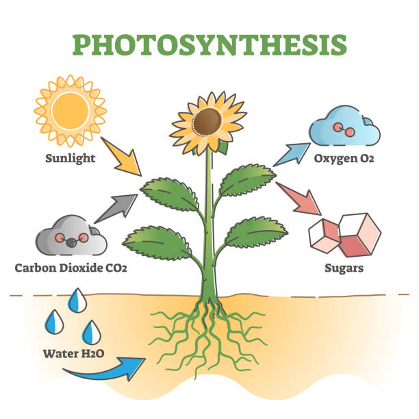
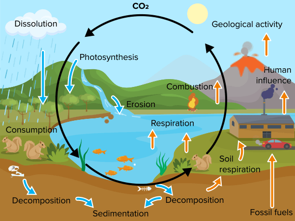

Photosynthesis & Carbon Cycle
PLANTS AND ENVIROMENT
PHOTOSYNTHESIS
Photosynthesis is the process by which plants make their own food. They use sunlight, water, and carbon dioxide from the air to produce glucose (a type of sugar) and oxygen. This happens in the green parts of the plant, like leaves, where a special substance called chlorophyll captures sunlight. Photosynthesis is important because it provides energy for plants to grow and creates oxygen, which humans and animals need to breathe.

Understanding Photosynthesis
About This Project
This website is all about explaining two important science topics: Photosynthesis and the Carbon Cycle. We want to make it easy to understand how plants make their own food and how they help keep the Earth healthy by cycling carbon. this site will help you understand these amazing processes in a simple and fun way!
What is Photosynthesis?
Photosynthesis is the process by which green plants and some other organisms use sunlight to synthesize foods with the help of chlorophyll. This process involves the conversion of light energy into chemical energy, providing the necessary fuel for plants to grow and thrive.
Key Steps in Photosynthesis
- Absorption of sunlight by chlorophyll.
- Water splitting into oxygen, electrons, and protons.
- Conversion of carbon dioxide into glucose and oxygen.
The Carbon Cycle
The carbon cycle is the process by which carbon is exchanged between the atmosphere, land, and oceans. It plays a crucial role in regulating Earth’s climate and maintaining the balance of life.
